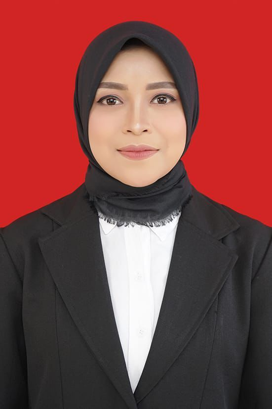
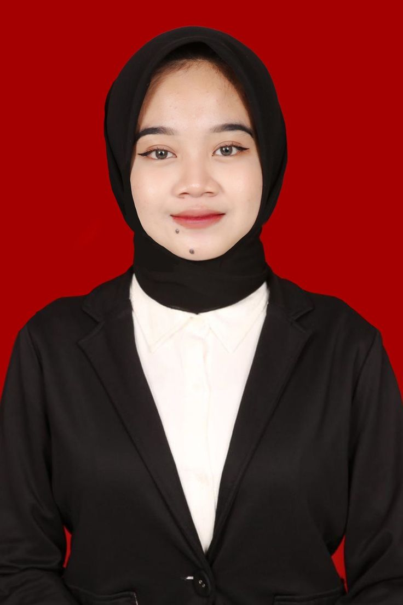
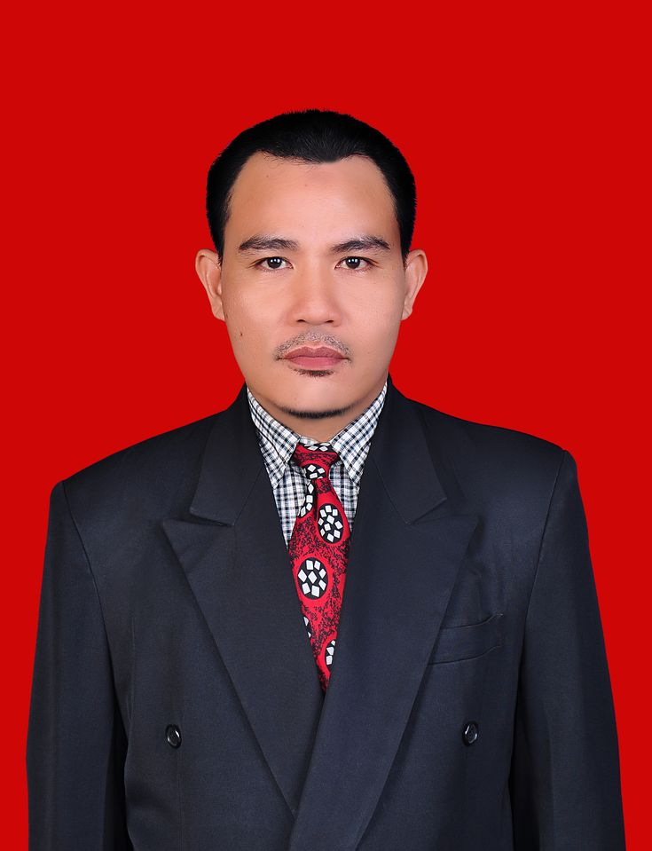
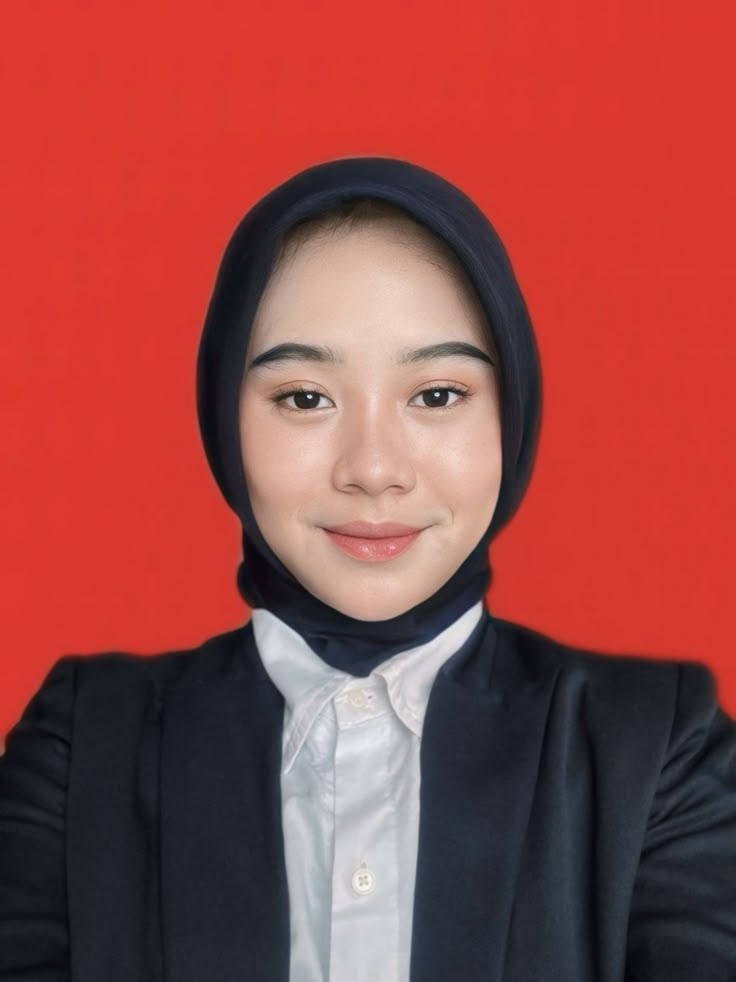
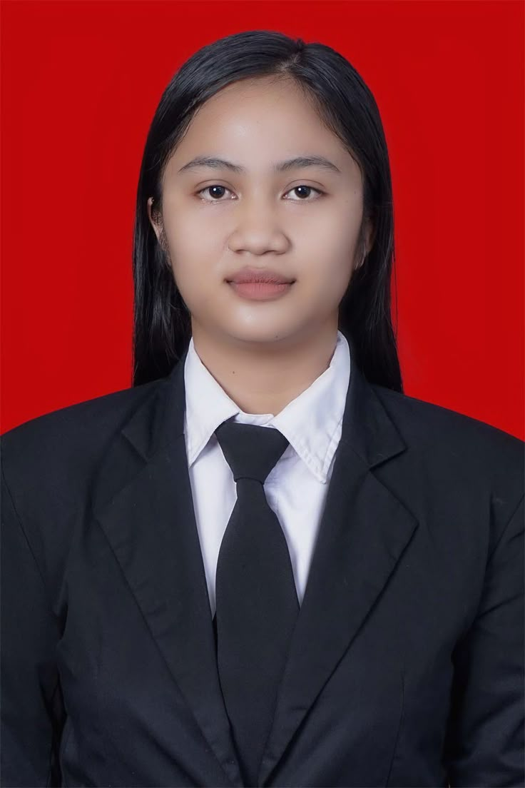

Human Resource Information System
Integrated Solution to Manage Human Resource Efficiently, Transparently, and Systematically
Integrated Solution to Manage Human Resource Efficiently, Transparently, and Systematically
Human Capital di PT Trans Pacific Petrochemical Indotama (TPPI) dipimpin oleh Human Capital VP yang membawahi tiga divisi utama yakni Organization & People Development, HR Shared Service, dan HR Business Partner Operation. Divisi Organization & People Development dikelola oleh seorang manajer yang membawahi Organization Development Analyst dan People Development Analyst. HR Shared Service dipimpin oleh HR Shared Service Manager yang membawahi staf langsung serta mengoordinasikan HR Shared Service Supervisor dan stafnya. Sementara itu, HR Business Partner Operation Section Head membawahi HR Shared Service Supervisor, Industrial Relation Supervisor (beserta stafnya), dan Medical Doctor. Struktur ini mencerminkan pembagian fungsi HR yang terorganisir dan efisien.
1. Tugas dan Tanggung Jawab
a. Menjembatani strategi bisnis dengan strategi SDM
b. Implementasi program HC di area operasional
c. Analisi dan perancangan tenaga kerja
d. Monitoring dan evaluasi kinerja HC
e. Pengelolaan tim HC
2. Aktivitas Utama
a. Menyusun rencana SDM selaras dengan strategi bisnis unit
b. Memberikan layanan konsultasi HC kepada pimpinan unit kerja
c. Mengelola hubungan industrial dan kepatuhan hukum ketenagakerjaan
d. Monitoring dan evaluasi pelaksanaan fungsi HC di area operasional
e. Memberikan masukan untuk perbaikan kebijakan atau implementasi di lapangan
f. Menjadi mitra strategi manajer dalam pengambilan keputusan berbasis SDM
3. Aktivitas Tambahan
a. Menyelenggarakan pelatihan atau sesi sosialisasi kebijakan SDM
b. Mengelola data dan analisis SDM di are operasional
c. Menjadi fasilitator dalam perubahan organisasi
d. Mendukung kegiatan employer branding dan employer engagement lokal
4. Wewenang
Mengimplementasikan kebijakan SDM dan menyelesaikan permasalahan ketenagakerjaan di area operasional. Memberikan rekomendasi strategi terkait rekrutmen, mutasi, dan pengembangan karyawan kepada pimpinan unit. Memiliki otoritas untuk mengelola tim HC area serta mengakses dan mengelola daya SDM secara penuh sesuai kebijakan perusahaan
5. Kondisi Lingkungan kerja
a. Lingkukan fisik berada di Kantor cabang perusahaan dengan ruangan tertutup dan fasilitas seperti, Komputer, sistem HRIS, printer, dan perangkat administrasi lainnya.
b. Lingkungan sosial dan organisasi, interaksi tinggi dengan berbagai departemen terkait, karyawan, dan vendor eksternal (perusahaan outsourcing, penyedia BPJS, asuransu, dan payroll). Harus mampu menjaga kerahasiaan informasi perusahaan, bersikap profesional, dan memiliki etos kerja yang tinggi.
c. Beban kerja, terbiasa menghadapi pekerjaan dengan tenggat waktu yang ketat, terlebih pada pemrosesan gaji, dan dokumen resmi. Memerlukan kemampuan multitasking dan pengolahan waktu yang baik.
d. Teknologi dan sistem, menggunakan sistem HRIS, payroll software, dan perangkat digital lainnya secara intensif. Memerlukan literasi digital yang baik untuk mengoperasikan Excel, sistem absensi, dan layanan online kepegawaian.
e. Budaya kerja, berfokus pada pelayanan internal (customer service) dengan standart respons waktu tertentu dengan budaya kerja meliputi kerahasiaan, akurasi, patuh pada prosedur perusahaan, dan orientasi layanan.
1. Tugas dan Tanggung Jawab
2. Aktivitas Utama
a. Pengawasan tim dalam pemrosesan data karyawan
b. Memastikan ketepatan dan kepatuhan terhadap prosedur internal
c. Menyusun laporan rutin untuk manajemen
3. Aktivitas Tambahan
a. Berkoordinasi dengan departemen lain untuk kebutuhan administrasi SDM dan peningkatan sistem yang terkair dengan layanan shared service
4. Wewenang
Mencakup pengambilan keputusan terkait kebijakan opersional, penyelesaian masalah administrasi SDM, serta pemberian araha kepada tum untuk memastikan kelancaran proses layanan shared service
5. Kondisi Lingkungan kerja
a. Lingkukan fisik berada di Kantor cabang perusahaan dengan ruangan tertutup dan fasilitas seperti, Komputer, sistem HRIS, printer, dan perangkat administrasi lainnya.
b. Lingkungan sosial dan organisasi, interaksi tinggi dengan berbagai departemen terkait, karyawan, dan vendor eksternal (perusahaan outsourcing, penyedia BPJS, asuransu, dan payroll). Harus mampu menjaga kerahasiaan informasi perusahaan, bersikap profesional, dan memiliki etos kerja yang tinggi.
c. Beban kerja, terbiasa menghadapi pekerjaan dengan tenggat waktu yang ketat, terlebih pada pemrosesan gaji, dan dokumen resmi. Memerlukan kemampuan multitasking dan pengolahan waktu yang baik.
d. Teknologi dan sistem, menggunakan sistem HRIS, payroll software, dan perangkat digital lainnya secara intensif. Memerlukan literasi digital yang baik untuk mengoperasikan Excel, sistem absensi, dan layanan online kepegawaian.
e. Budaya kerja, berfokus pada pelayanan internal (customer service) dengan standart respons waktu tertentu dengan budaya kerja meliputi kerahasiaan, akurasi, patuh pada prosedur perusahaan, dan orientasi layanan.
1. Tugas dan Tanggung Jawab
a. Pengelolaan administrasi SDM
b. Pengajian dan tunjangan
c. Layanan karyawan
d. Pemutakhiran sistem dan laporan
e. Kepatuhan dan kebijakan perusahaan
2. Aktivitas Utama
a. Mengelola administrasi payroll
b. Mengatur kegiatan training dan pengadaan tenaga kerja
c. Mengelola layanan administrasi kepegawaian
d. Mengelola administrasi waktu kerja
e. Mengelola perjalanan dinas
3. Aktivitas Tambahan
a. Menyusun dan memproses dokumen administrasi terkait kepegawaian
b. Bekoordinasi dengan pihak terkait dalam memastikan pembayaran gaji tepat waktu dan akurat
c. Mengelola administrasi BPJS Kesehatan, BPJS Ketenagakerjaan, dan benefit lainnya
d. Memastikan sistem informasi kepegawaian selalu diperbarui
4. Wewenang
Mengelola dan memelihara data karyawan, berwewenang mengakses, memperbarui, dan memverifikasi data karyawan di sistem HRIS Online sesuai dengan standart keamanan
5. Kondisi Lingkungan kerja
a. Lingkukan fisik berada di Kantor cabang perusahaan dengan ruangan tertutup dan fasilitas seperti, Komputer, sistem HRIS, printer, dan perangkat administrasi lainnya.
b. Lingkungan sosial dan organisasi, interaksi tinggi dengan berbagai departemen terkait, karyawan, dan vendor eksternal (perusahaan outsourcing, penyedia BPJS, asuransu, dan payroll). Harus mampu menjaga kerahasiaan informasi perusahaan, bersikap profesional, dan memiliki etos kerja yang tinggi.
c. Beban kerja, terbiasa menghadapi pekerjaan dengan tenggat waktu yang ketat, terlebih pada pemrosesan gaji, dan dokumen resmi. Memerlukan kemampuan multitasking dan pengolahan waktu yang baik.
d. Teknologi dan sistem, menggunakan sistem HRIS, payroll software, dan perangkat digital lainnya secara intensif. Memerlukan literasi digital yang baik untuk mengoperasikan Excel, sistem absensi, dan layanan online kepegawaian.
e. Budaya kerja, berfokus pada pelayanan internal (customer service) dengan standart respons waktu tertentu dengan budaya kerja meliputi kerahasiaan, akurasi, patuh pada prosedur perusahaan, dan orientasi layanan.
1. Tugas dan Tanggung Jawab
a. Mengawasi implementasi kebijakan hubungan industrial
b. Menangani perundingan dengan serikat pekerja
c. Menyelesaikan perselisihan ketenagakerjaan antara karyawan dan manajemen
2. Aktivitas Utama
a. Pengelolaan perjanjian kerja bersama
b. Memonitor kepatuhan terhadap peraturan ketenagakerjaan
c. Memberikan dukungan dalam mediasi konflik
3. Aktivitas Tambahan
a. Menyusun laporan hubungan industrial
b. Memberikan pelatihan kepada staff
c. Menjaga hubungan dengan instansi terkait seperti Dinas Ketenagakerjaan dan serikat pekerja
4. Wewenang
Pembuatan keputusan terkait kebijakan ketenagakerjaan, memberikan rekomendasi sanki disipliner, serta berwenang mewakili perusahaan dalam perundingan mediasi
5. Kondisi Lingkungan kerja
a. Lingkukan fisik berada di Kantor cabang perusahaan dengan ruangan tertutup dan fasilitas seperti, Komputer, sistem HRIS, printer, dan perangkat administrasi lainnya.
b. Lingkungan sosial dan organisasi, interaksi tinggi dengan berbagai departemen terkait, karyawan, dan vendor eksternal (perusahaan outsourcing, penyedia BPJS, asuransu, dan payroll). Harus mampu menjaga kerahasiaan informasi perusahaan, bersikap profesional, dan memiliki etos kerja yang tinggi.
c. Beban kerja, terbiasa menghadapi pekerjaan dengan tenggat waktu yang ketat, terlebih pada pemrosesan gaji, dan dokumen resmi. Memerlukan kemampuan multitasking dan pengolahan waktu yang baik.
d. Teknologi dan sistem, menggunakan sistem HRIS, payroll software, dan perangkat digital lainnya secara intensif. Memerlukan literasi digital yang baik untuk mengoperasikan Excel, sistem absensi, dan layanan online kepegawaian.
e. Budaya kerja, berfokus pada pelayanan internal (customer service) dengan standart respons waktu tertentu dengan budaya kerja meliputi kerahasiaan, akurasi, patuh pada prosedur perusahaan, dan orientasi layanan.
1. Tugas dan Tanggung Jawab
a. Penyusunan PKB peraturan perusahaan
b. Penyedia solusi penyelesaian masalah pekerja
c. Pengelolaan administrasi PHK pekerja
d. Pencatatan peraturan perusahaan
2. Aktivitas Utama
a. Pelaksanaan pertemuan serikat pekerja
b. Pengelolaan rekruitmen pekerja dan outsourcing
c. Memastikan kepatuhan perusahaan terhadap peraturan yang berlaku
d. Menyelesaikan perselisihan industrial secara damai dan sesuai prosedur hukum
e. Negosiasi perjanjian kerja bersama (PKB)
3. Aktivitas Tambahan
a. Menyelenggarakan pelatihan tentang hak dan kewajiban pekerja
b. Mendampingi proses PHK
4. Wewenang
Mewakili perusahaan dalam perundingan dengan serikat pekerja serta menyelesaikan perselisihan hubungan industrial. Ia juga berwenang mengakses data ketenagakerjaan dan memberikan rekomendasi terkait tindakan disipliner atau pemutusan hubungan kerja
5. Kondisi Lingkungan kerja
a. Lingkukan fisik berada di Kantor cabang perusahaan dengan ruangan tertutup dan fasilitas seperti, Komputer, sistem HRIS, printer, dan perangkat administrasi lainnya.
b. Lingkungan sosial dan organisasi, interaksi tinggi dengan berbagai departemen terkait, karyawan, dan vendor eksternal (perusahaan outsourcing, penyedia BPJS, asuransu, dan payroll). Harus mampu menjaga kerahasiaan informasi perusahaan, bersikap profesional, dan memiliki etos kerja yang tinggi.
c. Beban kerja, terbiasa menghadapi pekerjaan dengan tenggat waktu yang ketat, terlebih pada pemrosesan gaji, dan dokumen resmi. Memerlukan kemampuan multitasking dan pengolahan waktu yang baik.
d. Teknologi dan sistem, menggunakan sistem HRIS, payroll software, dan perangkat digital lainnya secara intensif. Memerlukan literasi digital yang baik untuk mengoperasikan Excel, sistem absensi, dan layanan online kepegawaian.
e. Budaya kerja, berfokus pada pelayanan internal (customer service) dengan standart respons waktu tertentu dengan budaya kerja meliputi kerahasiaan, akurasi, patuh pada prosedur perusahaan, dan orientasi layanan.
1. Tugas dan Tanggung Jawab
a. Membantu proses rekrutmen dan seleksi karyawan
b. Membantu pengelolaan aadministrasi personalia
c. Membantu proses pelatihan dan pengembangan karyawan
d. Membantu pengolahan manajemen kinerja perusahaan
2. Aktivitas Utama
a. Mengelola administrasi personalia
b. Mengelola absensi dan kehadiran
c. Mengelola rekrutmen dan seleksi awal
d. Mengelola administrasi waktu kerja
e. Melaporkan ketidaksesuaian atau pelanggaran karyawan
3. Aktivitas Tambahan
a. Menyiapkan dokumen dan peralatan kerja karyawan baru
b. Membantu pelaksanaan briefing awal karyawan baru
c. Melayani permintaan dokumen (surat keterangan kerja, BPJS, slip gaji, dan lain hal)
d. Menjadi penghubung antara karyawan dan HARI internal
4. Wewenang
Mengakses dan mengelola data administrasi Human Resources. Menjalankan proses administratif Human Resourcce sesuai instruksi. Menangani permintaan dokumen sederhana dari karyawan perusahaan.
5. Kondisi Lingkungan kerja
a. Lingkukan fisik berada di Kantor cabang perusahaan dengan ruangan tertutup dan fasilitas seperti, Komputer, sistem HRIS, printer, dan perangkat administrasi lainnya.
b. Lingkungan sosial dan organisasi, interaksi tinggi dengan berbagai departemen terkait, karyawan, dan vendor eksternal (perusahaan outsourcing, penyedia BPJS, asuransu, dan payroll). Harus mampu menjaga kerahasiaan informasi perusahaan, bersikap profesional, dan memiliki etos kerja yang tinggi.
c. Beban kerja, terbiasa menghadapi pekerjaan dengan tenggat waktu yang ketat, terlebih pada pemrosesan gaji, dan dokumen resmi. Memerlukan kemampuan multitasking dan pengolahan waktu yang baik.
d. Teknologi dan sistem, menggunakan sistem HRIS, payroll software, dan perangkat digital lainnya secara intensif. Memerlukan literasi digital yang baik untuk mengoperasikan Excel, sistem absensi, dan layanan online kepegawaian.
e. Budaya kerja, berfokus pada pelayanan internal (customer service) dengan standart respons waktu tertentu dengan budaya kerja meliputi kerahasiaan, akurasi, patuh pada prosedur perusahaan, dan orientasi layanan.
1. Tugas dan Tanggung Jawab
a. Membantu pengelolaan hubungan dengan serikat pekerja
b. Mendokumentasikan kasus perselisihan ketenagakerjaan
c. Memastikan kepatuhan terhadap peraturan ketenagakerjaan
d. Mendukung penyelesaian konflik internal
2. Aktivitas Utama
a. Menyusun jadwal pertemuan, mendokumentasikan hasil perundingan, dan menyiapkan bahan diskusi
b. Membantu mengecek dokumen dan proses HARI agar sesuai dengan peraturan yang berlaku
c. Menyusun, mengarsipkan, dan memperbarui dokumen PKB serta addendumnya
3. Aktivitas Tambahan
a. Menjaga keteraturan dikumen kontrak, peringatan, surat PHK, dan laporan mediasi
b. Menyiapkan data dan laporan rutin ke Disnaker atau lembaga lainnya
c. Mengumpulkan dan menyiapkan dokumen yang diminta auditor terkait hubungan kerja
4. Wewenang
Mengelola dan mengarsipkan dokumen ketenagakerjaan seperti kontrak kerja, surat peringatan, dan perjanjian kerja bersama, menyusun notulensi rapat, menyampaikan informasi hubungan industrial secara internal, serta membantu pengumpulan data dalam kasus perselisihan
5. Kondisi Lingkungan kerja
a. Lingkukan fisik berada di Kantor cabang perusahaan dengan ruangan tertutup dan fasilitas seperti, Komputer, sistem HRIS, printer, dan perangkat administrasi lainnya.
b. Lingkungan sosial dan organisasi, interaksi tinggi dengan berbagai departemen terkait, karyawan, dan vendor eksternal (perusahaan outsourcing, penyedia BPJS, asuransu, dan payroll). Harus mampu menjaga kerahasiaan informasi perusahaan, bersikap profesional, dan memiliki etos kerja yang tinggi.
c. Beban kerja, terbiasa menghadapi pekerjaan dengan tenggat waktu yang ketat, terlebih pada pemrosesan gaji, dan dokumen resmi. Memerlukan kemampuan multitasking dan pengolahan waktu yang baik.
d. Teknologi dan sistem, menggunakan sistem HRIS, payroll software, dan perangkat digital lainnya secara intensif. Memerlukan literasi digital yang baik untuk mengoperasikan Excel, sistem absensi, dan layanan online kepegawaian.
e. Budaya kerja, berfokus pada pelayanan internal (customer service) dengan standart respons waktu tertentu dengan budaya kerja meliputi kerahasiaan, akurasi, patuh pada prosedur perusahaan, dan orientasi layanan.
1 Mei 2025 - 30 Mei 2025
Submit in HERE!!
| Human Capital Shared Service Officer | Industrial Relation Supervisor |
|---|---|
|
Kualifikasi: 1. Pendidikan minimal S1, maksimal umur 30 tahun. 2. Jurusan Manajemen Sumber Daya Manusia atau Administrasi Bisnis. 3. Memiliki pengalaman kerja 1-2 tahun dibidangnya. |
Kualifikasi: 1. Pendidikan minimal S1, maksimal umur 35 tahun. 2. Jurusan Hukum atau Manajemen Sumber Daya Manusia. 3. Memiliki pengalaman kerja 3-5 tahun dibidangnya. |
|
Pengetahuan & Ketrampilan: 1. Memiliki pemahaman yang baik tentang proses administrasi HR seperti payroll, absensi, mutasi, dan data karyawan, serta keterampilan dalam penggunaan sistem HRIS. 2. Mampu mengoperasikan sistem HRIS dan Microsoft Office (Excel, Word, PowerPoint) 3. Komunikatif dan memiliki keterampilan interpersonal yang baik |
Pengetahuan & Ketrampilan: 1. Memiliki pemahaman yang mendalam tentang peraturan ketenagakerjaan, keterampilan komunikasi yang baik, serta kemampuan dalam negosiasi dan penyelesaian konflik. 2. Mampu mengoperasikan Microsoft Office (Excel, Word, PowerPoint) 3. Memiliki kepemimpinan yang kuat, keterampilan dalam manajemen tim, dan kemampuan analisis. |
| Profile | Biodata | Position | Masa Jabatan | Experience | Achievement |
|---|---|---|---|---|---|
|  |
Nama : Desy Ambarwati ID Karyawan : D-1601-02 Departemen : Human Capital Lokasi Kerja : PT. Trans-Pacific Petrochemical Indotama Status Karyawan : Tetap Tanggal Bergabung : 5 Februari 2016 Tempat Tanggal Lahir : Yogyakarta, 12 Desember 1986 Alamat : Jl. Kaliurang KM 9, Sleman, Yogyakarta Pendidikan Terakhir : S2 Magister Psikologi Industri, Universitas Gadjah Mada |
HC Business Partner Operation Area Manager | 9 Tahun 3 Bulan |
- 3 Tahun sebagai HRBP SUpervisor di Perusahaan Logistik Nasional - 2 Tahun sebagai HR Analyst di Sektor FMCQ - Certified Human Capital Strategist (CHCS)-2021 |
- Berhasil menurunkan tingkat turnover karyawan area operasional sebesar 25% dalam 2 tahun - Memenangkan penghargaan "Best HRBP Strategy Implementation" tahun 2023 - Menginisiasi program Leadership untuk 50+ Supervisor area |
|  |
Nama : Vidhya Hesti Setyorini ID Karyawan : D-1901-22 Departemen : Human Capital Lokasi Kerja : PT. Trans-Pacific Petrochemical Indotama Status Karyawan : Tetap Tanggal Bergabung : 15 Januari 2019 Tempat tanggal Lahir : Surabaya, 22 April 1991 Alamat : Jl. Rungkut Asri Tengah No.12, Surabaya Pendidikan Terakhir : S1 Manajemen, Universitas Airlangga |
HC Shared Service Supervisor | 6 Tahun 4 Bulan |
- 4 Tahun sebagai Payroll & Administration Officer - Berpengalaman dalam implementasi software Talent dan SAP SuccessFactors - Sertifikasi: Payroll Specialist by BNSP |
- Meningkatkan efisiensi proses payroll dan klaim hingga 35% melalui automasi sistem shared service - Menjadi Project Lead integrasi sistem SAP HRIS di tahun 2022 |
|
Nama : Rizky Maulana ID Karyawan : D-2101-10 Departemen : Human Capital Lokasi Kerja : PT. Trans-Pacific Petrochemical Indotama Status Karyawan : Outsourcing Tanggal Bergabung : 1 Oktober 2021 Tempat Tanggal Lahir : Bandung, 5 Maret 1997 Alamat : Jl. Cibaduyut Raya No.17, Bandung Pendidikan Terakhir : S1 Sistem Informasi, Universitas Telkom |
Staff HC SHared Service | 3 Tahun 7 Bulan |
- Intership di departemen HR perusahaan manufaktur - Familiar dengan sistem e-office dan Google workspace - Aktif sebagai relawan dalam program pelatihan keterampilan dasar HR |
- Menyelesaikan lebih dari 1500 permintaan data HR secara tepat waktu selama 2023 - Kontributor utama dalam digitalisasi arsip dokumen karyawan |
|
|  |
Nama : Arif Budi Prasetyo ID Karyawan : D-1701-24 Departemen : Human Capital Lokasi Kerja : PT. Trans-Pacific Petrochemical Indotama Status Karyawan : Tetap Tanggal Bergabung : 7 Juli 2017 Tempat Tanggal Lahir : Semarang, 17 November 1989 Alamat : Jl. Gajah Raya No.88, Semarang Timur Pendidikan Terakhir : S1 Hukum, Universitas Diponegoro |
Industrial Relation Supervisor | 7 Tahun 10 Bulan |
- 5 Tahun sebagai Industrial Relation Officer - Membangun relasi positif dengan 5 serikat pekerjaan di berbagai area |
- Berhasil menyelesaikan 95% kasus perselisihan hubungan Industrial secara dalam selama 2020-2024 - Mendalami UU ketenagakerjaan, Perjanjian Kerja Bersama, dan mediasi tripatit Sertifikasi mediator dari Kemnaker |
|  |
Nama : Nindy Oktaviany Sutopo ID Karyawan : D-2001-11 Departemen : Human Capital Lokasi Kerja : PT. Trans-Pacific Petrochemical Indotama Status Karyawan : Tetap Tanggal Bergabung : 3 Maret 2020 Tempat Tanggal Lahir : Jakarta, 9 Mei 1994 Alamat : Jl. Tebet Barat Dalam IX No.15, Jakarta Selatan Pendidikan Terakhir : S1 Hukum Ketenagakerjaan, Universitas Indonesia |
Industrial Relation Officer | 5 Tahun 2 Bulan |
- Legal Officer pada konsultan ketenagakerjaan - Lulusan Hukum dengan fokus Hukum Ketenagakerjaan - Mahir membuat dokumen legal ketenagakerjaan |
- Menyusun dan memperbarui 20+ peraturan perusahaan dan SOP internal - Aktif sebagai narasumber pelatihan hubungan industrial dasar untuk tim HR site |
|
Nama : Danu Firmansyah ID Karyawan : D-2201-09 Departemen : Human Capital Lokasi Kerja : PT. Trans-Pacific Petrochemical Indotama Status Karyawan : Outsourcing Tanggal Bergabung : 11 November 2022 Tempat Tanggal Lahir : Tuban, 30 Agustus 1996 Alamat : Jl. Narogong Indah No.23, Bekasi Timur Pendidikan Terakhir : S1 Hukum, Universitas Islam Negeri Jakarta |
Staff Industrial Relation | 2 Tahun 6 bulan |
- Pengalaman Kerja di Firma Hukum bagian Ketenagakerjaan - Keterampilan tinggi dalam Microsoft Word dan penyusunan dokumen hukum - Memahami struktur organisasi dan hubungan kerja tripartit |
- Mendukung tim dalam pelaksanaan sidang PHI dan dokumentasi lengkap - Menyusun laporan bulanan hubungan industrial dengan akurasi tinggi |
|
|  |
Nama : Clara Natalia Apsari ID Karyawan : D-2301-12 Departemen : Human Capital Lokasi Kerja : PT. Trans-Pacific Petrochemical Indotama Status Karyawan : Tetap Tanggal Bergabung : 17 Agustus 2023 Tempat Tanggal Lahir : Medan, 14 Juni 2000 Alamat : Jl. Iskandar Muda No.21, Medan Baru Pendidikan Terakhir : S1 Administrasi Bisnis, Universitas Sumatera Utara |
HC Shared Service Officer | 1 Tahun 9 Bulan |
- Fresh Greduate dengan magang di HR bagian administrasi kepegawaian - Familiar dengan sistem informasi kepegawaian berbasis cloud - Mampu mengelola filling digitgal dan manual |
- Menyelesaikan pelaporan BPJS dan data karyawan baru secara akurat untuk 10 site - Menerapkan form digital untuk kebutuhan klain reimburse karyawan |